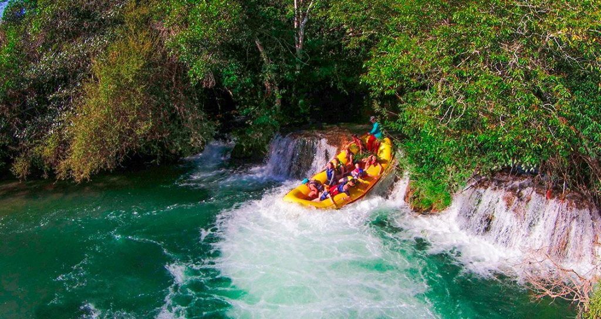
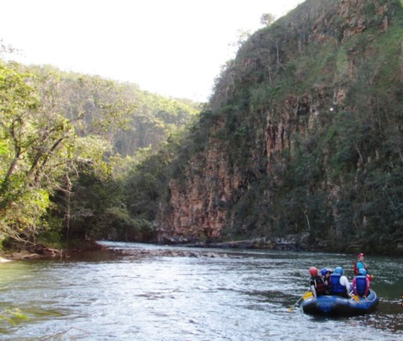
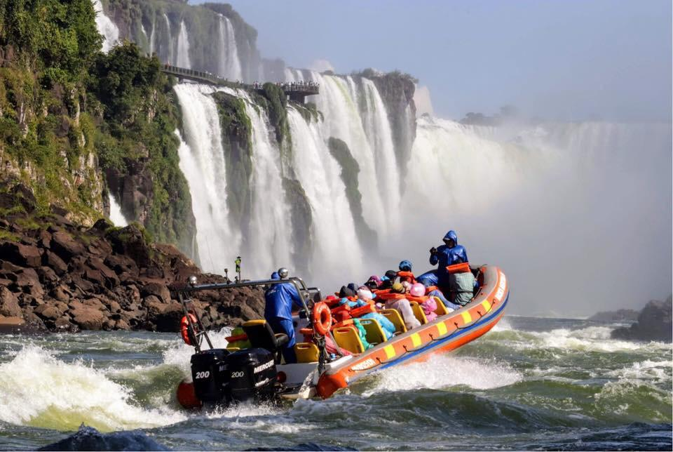

Our Rafting Trips and Adventures
Ready to Book Your Adventure?
Contact us today to reserve your spot!
Contact UsTrip 1: Rafting in Bonito
Experience the thrill of rafting down the beautiful rivers in Bonito - MS - Brazil. Our expert guides will take you on an unforgettable journey through stunning landscapes and exhilarating rapids.
Trip 2: Chapada Rafting
Join us for the ultimate Chapada River rafting adventure. Navigate through breathtaking canyons, enjoy serene camping spots, and conquer challenging rapids along the way.
Trip 3: Foz Waterfalls
Embark on a journey down the biggest waterfall in South America. Witness stunning wildlife, and experience the wonders of one of the world's most iconic waterfall.
Available Trips
| Trip Name | Location | Duration | Difficulty |
|---|---|---|---|
| Rafting in Bonito | Bonito - MS | 5 days | Intermediate |
| Chapada Rafting | Chapada Diamantina - MG | 7 days | Advanced |
| Foz Waterfalls | Foz de Iguaçu - PR | 10 days | Advanced |